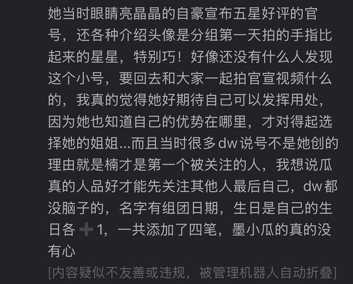

乘风2026｜目前为止曾沛慈最亲密的队友是谁？
-

aven 2026-06-11 04:04:17 四川
我不觉得可以淡淡的过去 dw就是纯恨她，为什么要觉得她不能在经历一切之后发小作文呢
-

不喜欢苹果 2026-06-11 04:04:21 江苏
点了 dw也是为了避🍉什么都不顾了 一公🥬亮灯🌈都没选 四公也选了李心洁 根本不是双向奔赴 点了 dw也是为了避🍉什么都不顾了 一公🥬亮灯🌈都没选 四公也选了李心洁 根本不是双向奔赴吧。。（没有任何批判🌈的意思 ... 银河路的小黄花是的 dw拿🥬ins只发了bl来磕 太逗了 有没有可能她合作的所有人里 除了两个师姐 别的人也不太玩ins 圈人都圈不到
5 条回复
-

yy 2026-06-11 04:18:48 比利时
是的 dw拿🥬ins只发了bl来磕 太逗了 有没有可能她合作的所有人里 除了两个师姐 别的人也不太玩 是的 dw拿🥬ins只发了bl来磕 太逗了 有没有可能她合作的所有人里 除了两个师姐 别的人也不太玩ins 圈人都圈不到 ... 不喜欢苹果ins要翻墙，在大陆生活工作用ins，是不是又可以被墨了？
-
银河路的小黄花 2026-06-11 04:21:07 河南
是的 dw拿🥬ins只发了bl来磕 太逗了 有没有可能她合作的所有人里 除了两个师姐 别的人也不太玩 是的 dw拿🥬ins只发了bl来磕 太逗了 有没有可能她合作的所有人里 除了两个师姐 别的人也不太玩ins 圈人都圈不到 ... 不喜欢苹果哎呦我天呢 而且dw太舔师姐了
-

-

-

-
-

-

50个鱼 2026-06-11 04:04:58 湖北
非常不爱看拉票环节 一般都不仔细看 但是那天看到🥬头上的猫耳也真是被惊了一下 感觉这季姐姐 非常不爱看拉票环节 一般都不仔细看 但是那天看到🥬头上的猫耳也真是被惊了一下 感觉这季姐姐们拉票都有点太注重花活了 反而没什么表达也不太打动人 这个猫耳看着尤其不明所以 而且和当时🥬的妆也非常不搭 ... 贰肆。最让我感动的拉票其实是四公的wzr
-
-

用户未注销 2026-06-11 04:05:07 福建
想问问为什么安利🥬都是终极系列很少有人提我们与恶的距离，那是真神剧啊她还拿了金钟女配，演 想问问为什么安利🥬都是终极系列很少有人提我们与恶的距离，那是真神剧啊她还拿了金钟女配，演的人物也是完全好小天使一样 ... ArcticIsland终极另外还有她的ost作为代表并且年末的时候还和东哥上了舞台合唱，当时合体拍摄的视频很多人看，这部确实在某种意义上蛮旺🥬的。另外与恶的距离，我感觉很少人会一下子记起她拿了奖这事，不关注演艺圈的人几乎不会去记得这件事，但她在这部剧里真的演绎得很好，当时看的时候哭了好几回（ps：其实我当时看得时候一度没认出这个角色的演员是谁，给我的反差很大吧，我对她印象最深刻还是king）
-

McDull 2026-06-11 04:05:13 北京
好的感谢。真的很怕影响🍉的路人缘，她真的值得喜欢
8 条回复
-
-

-
50个鱼 2026-06-11 04:11:45 湖北
瓜的路人缘好到爆的，出组无雨不是开玩笑的，外面是dw🈳场，看着热闹人多，点进去一个人能发一 瓜的路人缘好到爆的，出组无雨不是开玩笑的，外面是dw🈳场，看着热闹人多，点进去一个人能发一百条dd这种水评论，都没几个活人，不用在意 ... 千年万岁
这个榜单是可以嗑的吗
-
-
千年万岁 2026-06-11 04:20:18 重庆
瓜的路人缘好到爆的，出组无雨不是开玩笑的，外面是dw🈳场，看着热闹人多，点进去一个人能发一 瓜的路人缘好到爆的，出组无雨不是开玩笑的，外面是dw🈳场，看着热闹人多，点进去一个人能发一百条dd这种水评论，都没几个活人，不用在意 ... 千年万岁
其实看到浏览度，我还是想说瓜最闪耀被大家发现的时候真的是三公期间，完全破圈，by5团魂燃得无人不知，凑热闹一首最难的唱跳歌曲，舞台又齐又好，但是被狠狠做局，真的是浪史冤案了，后面选人才会被四个团抢。所以五公离开菜也挺好的，更多人可以看到她的付出，dw也不会那么严重，菜也可以固她的粉为抢c做准备
-
-
A. 2026-06-11 04:23:12 湖北
其实看到浏览度，我还是想说瓜最闪耀被大家发现的时候真的是三公期间，完全破圈，by5团魂燃得无 其实看到浏览度，我还是想说瓜最闪耀被大家发现的时候真的是三公期间，完全破圈，by5团魂燃得无人不知，凑热闹一首最难的唱跳歌曲，舞台又齐又好，但是被狠狠做局，真的是浪史冤案了，后面选人才会被四个团抢。所以五公离开菜也挺好的，更多人可以看到她的付出，dw也不会那么严重，菜也可以固她的粉为抢c做准备 ... 千年万岁🌙也可以通过🍉吸粉为抢C做准备🤭
-

-
-
银河路的小黄花 2026-06-11 04:05:34 河南
她下场我觉得不意外 但是很多人当回事了 在我看来无异于一次普通的同事聚会 毕竟pets老浪花了 而 她下场我觉得不意外 但是很多人当回事了 在我看来无异于一次普通的同事聚会 毕竟pets老浪花了 而且因为延期的情况她们的“战友情”起来了 但是dw一直舞一个她并不出彩的舞台我真的看不懂 我也知道她能磕下来确实不容易 可以说她离了浪姐80%不会再碰唱跳 还不如老老实实舞vocal和剧 ... 汤师傅圆圆支持
-

-

-
A. 2026-06-11 04:06:20 湖北
非常不爱看拉票环节 一般都不仔细看 但是那天看到🥬头上的猫耳也真是被惊了一下 感觉这季姐姐 非常不爱看拉票环节 一般都不仔细看 但是那天看到🥬头上的猫耳也真是被惊了一下 感觉这季姐姐们拉票都有点太注重花活了 反而没什么表达也不太打动人 这个猫耳看着尤其不明所以 而且和当时🥬的妆也非常不搭 ... 贰肆。其实上一季更花哨 这一季已经很收敛了 但是能想出这种对女明星不友好的拉票方式的 我真的只能说快点远离这个人吧 -

zpc＆🍉99 2026-06-11 04:06:34 辽宁
我再说一个我很感动的点，就是理论上，我们跟🍉的工作人员一样都是打工人，都是打卡上班的，相 我再说一个我很感动的点，就是理论上，我们跟🍉的工作人员一样都是打工人，都是打卡上班的，相当于算是为🍉服务的吧。但是从她的所有的路透也好，vlog也好，你能清晰的感受到，她所有的工作人员都是爱她的，包括她的大经纪，小室，grace这些。她们同桌吃饭，互开玩笑。朝夕相处的人早就没有任何明星的滤镜了，其实通过这些细节就能感受到🍉真的是一个很好很好的女孩子了。所以我真的很想说，有些人你真的没有心。（而且我又回顾vlog的时候，看她眼睛亮亮的，说“我注册了个团号”），她大概也满心欢喜的想要做好一切的宣传工作，结果她自己亲手做的账号成了dw反刺给她的刀。说不心疼是假的。 ... zpc＆🍉99大晚上的我自己又看了一遍又哭了。又看了一遍团号下面的辱骂 眼泪都流干了
-

你哪位 2026-06-11 04:07:35 广东
非常不爱看拉票环节 一般都不仔细看 但是那天看到🥬头上的猫耳也真是被惊了一下 感觉这季姐姐 非常不爱看拉票环节 一般都不仔细看 但是那天看到🥬头上的猫耳也真是被惊了一下 感觉这季姐姐们拉票都有点太注重花活了 反而没什么表达也不太打动人 这个猫耳看着尤其不明所以 而且和当时🥬的妆也非常不搭 ... 贰肆。大支持
-

disc 2026-06-11 04:08:05 上海
有一点我是不理解，即使同是三公，为什么🥬团队不选择舞递菜人，而是选择宝莲，不管是🥬粉丝 有一点我是不理解，即使同是三公，为什么🥬团队不选择舞递菜人，而是选择宝莲，不管是🥬粉丝还是广大的路人，我觉得最开始都是更喜欢递菜人的，慈🌈、慈楠、慈雯都是唯粉能接受的工具组合，包括后面的舞台数据也都证实了这一点。舞宝莲结果导向绝对是给她人做嫁衣多于帮自身吸粉的。 ... 巨星不乂瞧不上呗，觉得师姐唱跳就是厉害自动加上滤镜，没有竞争关系，其实舞宝莲才是给他们放血，师姐要是真厉害，都不至于每届都回浪姐最火的时候也就浪姐了，他们才需要这波热度 -
用户未注销 2026-06-11 04:08:19 福建
我是🍉耳，他们都说不好听，但我溺爱的每次都一脸慈祥地拉进度条去看🍉用辣条音rap。能怎么办吧！我不清楚！
1 条回复
-

赫兹 2026-06-11 04:10:49 河北
我是🍉耳，他们都说不好听，但我溺爱的每次都一脸慈祥地拉进度条去看🍉用辣条音rap。能怎么 我是🍉耳，他们都说不好听，但我溺爱的每次都一脸慈祥地拉进度条去看🍉用辣条音rap。能怎么办吧！我不清楚！ ... 用户未注销怎么办？再听一遍！享受~
-
-

-

溜溜 2026-06-11 04:08:26 江苏
钱也给你花了 周日冲钻超给你做了10个小时数据 晚上的直播都没看 戴着耳机听完搁浅又去wb了 等了两天的小作文是在展望五公我也理解 毕竟四公发展到最后有点乌烟瘴气 但我没想到会对宝莲和五星好评这么双标 队友给你的评论一条都不回复 1000的小作文艾特你也不回复 放的甚至还是搁浅的舞台 一二三公的时候你不是这样的吧🙂↕️🙂↕️🙂↕️
5 条回复
-
溜溜 2026-06-11 04:08:42 江苏
钱也给你花了 周日冲钻超给你做了10个小时数据 晚上的直播都没看 戴着耳机听完搁浅又去wb了 等了 钱也给你花了 周日冲钻超给你做了10个小时数据 晚上的直播都没看 戴着耳机听完搁浅又去wb了 等了两天的小作文是在展望五公我也理解 毕竟四公发展到最后有点乌烟瘴气 但我没想到会对宝莲和五星好评这么双标 队友给你的评论一条都不回复 1000的小作文艾特你也不回复 放的甚至还是搁浅的舞台 一二三公的时候你不是这样的吧🙂↕️🙂↕️🙂↕️ ... 溜溜你也是为了避开🍉什么都不顾了^_^
-
赫兹 2026-06-11 04:17:28 河北
钱也给你花了 周日冲钻超给你做了10个小时数据 晚上的直播都没看 戴着耳机听完搁浅又去wb了 等了 钱也给你花了 周日冲钻超给你做了10个小时数据 晚上的直播都没看 戴着耳机听完搁浅又去wb了 等了两天的小作文是在展望五公我也理解 毕竟四公发展到最后有点乌烟瘴气 但我没想到会对宝莲和五星好评这么双标 队友给你的评论一条都不回复 1000的小作文艾特你也不回复 放的甚至还是搁浅的舞台 一二三公的时候你不是这样的吧🙂↕️🙂↕️🙂↕️ ... 溜溜卧烤！！！我没注意到😣刚去看了看，我给每一个都点赞了但真的没回复。卧蚕的爱又要被辜负了么😣
-
赫兹 2026-06-11 04:20:01 河北
钱也给你花了 周日冲钻超给你做了10个小时数据 晚上的直播都没看 戴着耳机听完搁浅又去wb了 等了 钱也给你花了 周日冲钻超给你做了10个小时数据 晚上的直播都没看 戴着耳机听完搁浅又去wb了 等了两天的小作文是在展望五公我也理解 毕竟四公发展到最后有点乌烟瘴气 但我没想到会对宝莲和五星好评这么双标 队友给你的评论一条都不回复 1000的小作文艾特你也不回复 放的甚至还是搁浅的舞台 一二三公的时候你不是这样的吧🙂↕️🙂↕️🙂↕️ ... 溜溜还有 ，刚注意到三公所有人都回复了，就没有回复万千惠😦
-

B8017913 2026-06-11 04:20:51 广东
钱也给你花了 周日冲钻超给你做了10个小时数据 晚上的直播都没看 戴着耳机听完搁浅又去wb了 等了 钱也给你花了 周日冲钻超给你做了10个小时数据 晚上的直播都没看 戴着耳机听完搁浅又去wb了 等了两天的小作文是在展望五公我也理解 毕竟四公发展到最后有点乌烟瘴气 但我没想到会对宝莲和五星好评这么双标 队友给你的评论一条都不回复 1000的小作文艾特你也不回复 放的甚至还是搁浅的舞台 一二三公的时候你不是这样的吧🙂↕️🙂↕️🙂↕️ ... 溜溜选择不回复是🥬觉得的一种保护吧 那群无🧠的连🥬本人都骂 都诅咒 她们就是说好的啊 一张团照都没有。 都怪疯子
-
溜溜 2026-06-11 04:23:21 江苏
选择不回复是🥬觉得的一种保护吧 那群无🧠的连🥬本人都骂 都诅咒 她们就是说好的啊 一张 选择不回复是🥬觉得的一种保护吧 那群无🧠的连🥬本人都骂 都诅咒 她们就是说好的啊 一张团照都没有。 都怪疯子 ... B8017913发展成这样我觉得好可惜…
-
-

momo 2026-06-11 04:08:37 中国台湾
想起来🍉真的很多人喜欢 濛到处串门练习室 对喜欢的姐姐会开玩笑闹她们 最著名的是我会等练习室翻滚到李冉身边 濛去凑热闹练习室那里 在🍉唱歌的时候突然在她耳边叫 好可爱吧
-

Yiil1ano 2026-06-11 04:08:43 福建
感觉此帖留下来的都是善良又理性 同时有正确认知的人 好幸福 真的像乌托邦 像避风港
1 条回复
-
用户未注销 2026-06-11 04:11:06 福建
躲在乐子楼里，不要被dw找到
-
-

txhfmshe111 2026-06-11 04:08:48 天津
想问问为什么安利🥬都是终极系列很少有人提我们与恶的距离，那是真神剧啊她还拿了金钟女配，演 想问问为什么安利🥬都是终极系列很少有人提我们与恶的距离，那是真神剧啊她还拿了金钟女配，演的人物也是完全好小天使一样 ... ArcticIsland这部剧超好看的
-
A. 2026-06-11 04:08:50 湖北
但是承受的痛苦真的会让人心疼她。她本可以不必承担这么多。换位思考如果是我，我也是敏感的性格 但是承受的痛苦真的会让人心疼她。她本可以不必承担这么多。换位思考如果是我，我也是敏感的性格，被贴脸+造黄谣+疯狂艾特辱骂+前一天舞台失误，我真的连站雪人台上的勇气都没有了。 ... zpc＆🍉99确实我真的很心疼她 她雪人发挥的这么好 我出乎意料 她开口第一句我也哭了 看完整个舞台我就一直在哭 因为知道她这么多天有多么不容易 而且zhy太ex了 明明知道她经历过 这样的事情 还刺向她
1 条回复
-
zpc＆🍉99 2026-06-11 04:13:08 辽宁
确实我真的很心疼她 她雪人发挥的这么好 我出乎意料 她开口第一句我也哭了 看完整个舞台我就一直 确实我真的很心疼她 她雪人发挥的这么好 我出乎意料 她开口第一句我也哭了 看完整个舞台我就一直在哭 因为知道她这么多天有多么不容易 而且zhy太ex了 明明知道她经历过 这样的事情 还刺向她 ... A.伤害过你的人最知道怎么样能再次伤到你。
-
-

WMF 2026-06-11 04:09:08 四川
熬了几天夜，从看乐子到真情实感，也有很多话想说。
就随便打打字吧。
这张照片是我第一次注意到两个人的时候，照片上刷子还是粉色的，另外一个人也没有现在那么瘦。两个人就这么明媚又不讲道理地像课间的女高中生那样闯进了我的视野。
一开始也只是cb向磕着玩玩，单纯喜欢看一些开朗的人相处的时光，来填补自己单调无趣的生活，只是没想过，粉色刷子有一天变成了不敢笑的委屈小狗，旁边的人也肉眼可见的不再像初舞台那样驯服四肢那样的活泼。
可是明明时间也只过去了一两个月。
粉色的武大樱花树也变成了红色的火山口，在树下唱歌的人声音也像被熔浆烫过一样一次一次变得暗淡。
不过老天有眼，阴差阳错送给俩人一首雪人，炽热的爱让雪人融化，于是樱花树从此也有了养分，被烫伤的人的伤痕也被抚平。
爱是治愈一切伤口的良药，真心亦只有真心可交换。而这一切，我们都看得到。
如果可以，我还是想回到那时候的金毛和萨摩耶，无忧无虑仿佛下一刻就要从屏幕里冲出来的时候。
4 条回复
-
用户未注销 2026-06-11 04:12:13 福建
熬了几天夜，从看乐子到真情实感，也有很多话想说。 就随便打打字吧。 这张照片是我第一次注意 熬了几天夜，从看乐子到真情实感，也有很多话想说。 就随便打打字吧。 这张照片是我第一次注意到两个人的时候，照片上刷子还是粉色的，另外一个人也没有现在那么瘦。两个人就这么明媚又不讲道理地像课间的女高中生那样闯进了我的视野。 一开始也只是cb向磕着玩玩，单纯喜欢看一些开朗的人相处的时光，来填补自己单调无趣的生活，只是没想过，粉色刷子有一天变成了不敢笑的委屈小狗，旁边的人也肉眼可见的不再像初舞台那样驯服四肢那样的活泼。 可是明明时间也只过去了一两个月。 粉色的武大樱花树也变成了红色的火山口，在树下唱歌的人声音也像被熔浆烫过一样一次一次变得暗淡。 不过老天有眼，阴差阳错送给俩人一首雪人，炽热的爱让雪人融化，于是樱花树从此也有了养分，被烫伤的人的伤痕也被抚平。 爱是治愈一切伤口的良药，真心亦只有真心可交换。而这一切，我们都看得到。 如果可以，我还是想回到那时候的金毛和萨摩耶，无忧无虑仿佛下一刻就要从屏幕里冲出来的时候。 ... WMF宝宝写得好好，俺陪哭一下
-

一树花开 2026-06-11 04:14:35 广西
熬了几天夜，从看乐子到真情实感，也有很多话想说。 就随便打打字吧。 这张照片是我第一次注意 熬了几天夜，从看乐子到真情实感，也有很多话想说。 就随便打打字吧。 这张照片是我第一次注意到两个人的时候，照片上刷子还是粉色的，另外一个人也没有现在那么瘦。两个人就这么明媚又不讲道理地像课间的女高中生那样闯进了我的视野。 一开始也只是cb向磕着玩玩，单纯喜欢看一些开朗的人相处的时光，来填补自己单调无趣的生活，只是没想过，粉色刷子有一天变成了不敢笑的委屈小狗，旁边的人也肉眼可见的不再像初舞台那样驯服四肢那样的活泼。 可是明明时间也只过去了一两个月。 粉色的武大樱花树也变成了红色的火山口，在树下唱歌的人声音也像被熔浆烫过一样一次一次变得暗淡。 不过老天有眼，阴差阳错送给俩人一首雪人，炽热的爱让雪人融化，于是樱花树从此也有了养分，被烫伤的人的伤痕也被抚平。 爱是治愈一切伤口的良药，真心亦只有真心可交换。而这一切，我们都看得到。 如果可以，我还是想回到那时候的金毛和萨摩耶，无忧无虑仿佛下一刻就要从屏幕里冲出来的时候。 ... WMF无论怎么样再看到一二公的照片还是很恍惚 那些美好的日子真的存在过吗
-
WMF 2026-06-11 04:18:37 四川

简直不敢想当时的我有多快乐
-
-
-
-
B8017913 2026-06-11 04:09:13 广东
而且我非常自信的相信，如果她进了濛冉组，以她的网感，她依然能很轻易的让这组在网络上破圈，就 而且我非常自信的相信，如果她进了濛冉组，以她的网感，她依然能很轻易的让这组在网络上破圈，就用普通disco这个歌。 但我只能说她超爱，一是超爱她姐，二是她不确定自己能还走多久，想留一个国风的舞台 ... zpc＆🍉99有利有弊 一个利就是曲折后留下了⛄舞台 如果去濛姐团可能且不到第二个 （看到🥬且舞台给🍉这种说法就有点想笑 ⛄好美 🍉和🍬互相成就了一个很感人的舞台
-
贰肆。 (没有谁是一座孤岛。) 2026-06-11 04:10:10 浙江
我是因为在抖上刷到便利贴和篇章的切片才去看的浪7，篇章zpc一开口那句真的太好听了。一公舞台和 我是因为在抖上刷到便利贴和篇章的切片才去看的浪7，篇章zpc一开口那句真的太好听了。一公舞台和言不由衷也看了很多遍，这两个舞台的妆造也是我喜欢的。一公二公团秀组员少，她的vocal表现非常明显，三公团秀就真的只是团秀了，她是想让组员多表现无可厚非，四公嗓子问题，cy和yyq的表现更亮眼。 ... 是小熊猫呀🥬的优势是大窝扣啊 一公二公🥬都是亮点 舞台好听好看 言不由衷简直唱出了神性 也不舞 非要舞她的唱跳舞台…她虽然很努力但是怎么比得过师姐 这些dw真的不知道究竟是不是粉
-
银河路的小黄花 2026-06-11 04:11:08 河南
有一点我是不理解，即使同是三公，为什么🥬团队不选择舞递菜人，而是选择宝莲，不管是🥬粉丝 有一点我是不理解，即使同是三公，为什么🥬团队不选择舞递菜人，而是选择宝莲，不管是🥬粉丝还是广大的路人，我觉得最开始都是更喜欢递菜人的，慈🌈、慈楠、慈雯都是唯粉能接受的工具组合，包括后面的舞台数据也都证实了这一点。舞宝莲结果导向绝对是给她人做嫁衣多于帮自身吸粉的。 ... 巨星不乂dw有点春虫虫了 不知道一直舞一个不出彩的舞台是干嘛 。。。bl真的完全比不上别的舞台吧 这首歌就很难听1 条回复
-
不喜欢苹果 2026-06-11 04:12:48 江苏
dw有点春虫虫了 不知道一直舞一个不出彩的舞台是干嘛 。。。bl真的完全比不上别的舞台吧 这首歌 dw有点春虫虫了 不知道一直舞一个不出彩的舞台是干嘛 。。。bl真的完全比不上别的舞台吧 这首歌就很难听 ... 银河路的小黄花[该回复已被折叠] 银河路的小黄花 展开[内容疑似不友善或违规，被管理机器人自动折叠]而且明显🥬关系更好的都不是本季的
-
-
-

-

蜜雪冰城甜蜜蜜 2026-06-11 04:11:57 河南
本人是很好 只是怕dw在生事 此楼已经有些粉 已经因为dw想脱粉了 正常粉圈引导和路人缘这件事希望 本人是很好 只是怕dw在生事 此楼已经有些粉 已经因为dw想脱粉了 正常粉圈引导和路人缘这件事希望她未来能知道怎么做吧 不过确实最重要还是她作为歌手在舞台上的魅力或者她自身的人格魅力 吸引的才是与她本人同频的粉丝 而不是因为流量吸引来的dw ... Yiil1ano说一下我自己的心路历程：一开始我纯是浪姐几季的观众这季开播就关注了一下但是不爱看直播就没追，后面刷到了🥬初舞台对🥬有好感，就断断续续在dy看片段主要是看🥬，后面刷到🍉的vlog觉得里面的姐姐都很有意思开始追vlog看，渐渐好感许多姐姐然后充会员开始每周追，三公开始看直播最爱看的是🥬🍉但不嗑纯爱看她俩周围发生的事，直到四公事变给我锤成了cp粉，为了吃cp饭和各种dw、乐子让我开始下wb和db看，到现在dw不断变本加厉搞🍉加今天炒bl，已经成功让我开始讨厌🥬粉无感🥬…（下周🥬舞台出来可能会继续因为舞台魅力好感🥬，但是dw一直这么搞下去节目结束之后路人缘绝对完蛋）
1 条回复
-
momo 2026-06-11 04:18:52 美国
说一下我自己的心路历程：一开始我纯是浪姐几季的观众这季开播就关注了一下但是不爱看直播就没追 说一下我自己的心路历程：一开始我纯是浪姐几季的观众这季开播就关注了一下但是不爱看直播就没追，后面刷到了🥬初舞台对🥬有好感，就断断续续在dy看片段主要是看🥬，后面刷到🍉的vlog觉得里面的姐姐都很有意思开始追vlog看，渐渐好感许多姐姐然后充会员开始每周追，三公开始看直播最爱看的是🥬🍉但不嗑纯爱看她俩周围发生的事，直到四公事变给我锤成了cp粉，为了吃cp饭和各种dw、乐子让我开始下wb和db看，到现在dw不断变本加厉搞🍉加今天炒bl，已经成功让我开始讨厌🥬粉无感🥬…（下周🥬舞台出来可能会继续因为舞台魅力好感🥬，但是dw一直这么搞下去节目结束之后路人缘绝对完蛋） ... 蜜雪冰城甜蜜蜜不过我感觉那些人有不少都不是dw，挑子批皮人很多专门这样的，要的就是你不喜欢沛慈的效果
-
-
yy 2026-06-11 04:12:44 比利时
是的，两队帮唱师姐都不是一个level，bl现在炒的火热估计是后续合作吧wff说聊什么制作，他俩也需 是的，两队帮唱师姐都不是一个level，bl现在炒的火热估计是后续合作吧wff说聊什么制作，他俩也需要这波热度炒一炒 ... disc尚和萨感觉真诚很多，也没有总是炒作浪姐这个ip
-
赫兹 2026-06-11 04:12:45 河北
是的 我真的觉得雪人特别好听 而且我很喜欢🍉的音色 好适合唱旋律rap 和于贞的音色很像耶 一 是的 我真的觉得雪人特别好听 而且我很喜欢🍉的音色 好适合唱旋律rap 和于贞的音色很像耶 一半一半真的特别好听 三个人非常和谐 没有一个不好听的片段 ... A.我也喜欢这个音色，二公篇章跟🥬和声吟唱和“梦想破土生长更多答案”我也觉得很好听，反正就要溺爱
-
disc 2026-06-11 04:13:18 上海
有一点我是不理解，即使同是三公，为什么🥬团队不选择舞递菜人，而是选择宝莲，不管是🥬粉丝 有一点我是不理解，即使同是三公，为什么🥬团队不选择舞递菜人，而是选择宝莲，不管是🥬粉丝还是广大的路人，我觉得最开始都是更喜欢递菜人的，慈🌈、慈楠、慈雯都是唯粉能接受的工具组合，包括后面的舞台数据也都证实了这一点。舞宝莲结果导向绝对是给她人做嫁衣多于帮自身吸粉的。 ... 巨星不乂瞧不上，他们觉得师姐更厉害自动加上滤镜想巴结人家，其实人家才最想吃这波热度，现在唱跳根本没啥舞台，他俩每届都来不然都查无此人最火的时候也就浪1了
4 条回复
-

浪味仙（已黑化 2026-06-11 04:18:53 山西
瞧不上，他们觉得师姐更厉害自动加上滤镜想巴结人家，其实人家才最想吃这波热度，现在唱跳根本没 瞧不上，他们觉得师姐更厉害自动加上滤镜想巴结人家，其实人家才最想吃这波热度，现在唱跳根本没啥舞台，他俩每届都来不然都查无此人最火的时候也就浪1了 ... disc这是真的，她们每年也就浪有点热度，而且比起来🌋才是更完全没有竞争的吧到底为什么这么恨这对🤣骂cpf不买杂志的个人感觉大部分就是🌋出杂志也不会买磕个乐（杂志也是纯韭菜。。）而且现在很多相对更怜爱🌋的是被wf搞怜爱的，说吸血她有吸几根真的会花钱的丝，都是路人粉罢了
-
ArcticIsland 2026-06-11 04:19:54 广东
瞧不上，他们觉得师姐更厉害自动加上滤镜想巴结人家，其实人家才最想吃这波热度，现在唱跳根本没 瞧不上，他们觉得师姐更厉害自动加上滤镜想巴结人家，其实人家才最想吃这波热度，现在唱跳根本没啥舞台，他俩每届都来不然都查无此人最火的时候也就浪1了 ... disc爱bl的估计有不少祖传浪粉，这种很难转化带走的，大家追了这么多季，早就有真心肝了，被这季吸引来的新人其实才更好转化
-
yy 2026-06-11 04:23:11 比利时
瞧不上，他们觉得师姐更厉害自动加上滤镜想巴结人家，其实人家才最想吃这波热度，现在唱跳根本没 瞧不上，他们觉得师姐更厉害自动加上滤镜想巴结人家，其实人家才最想吃这波热度，现在唱跳根本没啥舞台，他俩每届都来不然都查无此人最火的时候也就浪1了 ... disc师姐的热度都比不上🍉。她们参加的娱乐节目，不是在这里考试。dw把自己当家长了，只准跟好学生玩。然而从经营能力来说，🍉才是真正的网感top
-
disc 2026-06-11 04:23:34 上海
这是真的，她们每年也就浪有点热度，而且比起来🌋才是更完全没有竞争的吧到底为什么这么恨这对 这是真的，她们每年也就浪有点热度，而且比起来🌋才是更完全没有竞争的吧到底为什么这么恨这对🤣骂cpf不买杂志的个人感觉大部分就是🌋出杂志也不会买磕个乐（杂志也是纯韭菜。。）而且现在很多相对更怜爱🌋的是被wf搞怜爱的，说吸血她有吸几根真的会花钱的丝，都是路人粉罢了 ... 浪味仙（已黑化纯恨嫂子吧，🍉是演员，就算浪姐结束之后吸的这些粉丝也不一定留得住，因为没啥舞台了毫无威胁，师姐就不一样了，人家每年都等着续一口呢，而且还顺道给人舞了个新合作美滋滋
-
-

-

好momo (土豆好吃，哇哈哈) 2026-06-11 04:13:41 河南
🍉下场发的小作文虽然有点春虫虫 看得我都厌👄了 一是没有标点符号 二是不懂不回应就是最好 🍉下场发的小作文虽然有点春虫虫 看得我都厌👄了 一是没有标点符号 二是不懂不回应就是最好的回应 但仔细一想谁还没有个性情的时候呢 ... 溜溜你自己也没标点符号
-
yy 2026-06-11 04:14:01 比利时
便利贴组合都挺喜欢🍉的，真要蹭，当便利贴的第四人不是更好吗？
-

我的金桔 2026-06-11 04:14:12 四川
是的，两队帮唱师姐都不是一个level，bl现在炒的火热估计是后续合作吧wff说聊什么制作，他俩也需 是的，两队帮唱师姐都不是一个level，bl现在炒的火热估计是后续合作吧wff说聊什么制作，他俩也需要这波热度炒一炒 ... disc这才是被当作工具人吧 🍉我真的怜爱 虐成粉了
2 条回复
-
-
50个鱼 2026-06-11 04:24:22 湖北
真的给白菜辅酶的是一公的时候🍉的Vlog，那个时候没几个姐姐拍这个而且只有🍉的总是最有趣的 真的给白菜辅酶的是一公的时候🍉的Vlog，那个时候没几个姐姐拍这个而且只有🍉的总是最有趣的，我可以不看🥭但只要更新我就会追她的Vlog ... 呱我一直觉得她们两个人是相互成就，我第一次get到🥬的可爱是在🍉的vlog里她说“大家想不想看我揍hcc”。很难理解dw到底为什么要发卖🍉，就让🥬一直站在🍉的樱花树下被赋魅不好吗。
-
-
McDull 2026-06-11 04:15:00 北京
我再刀你一下。🍉4公分组放假之前跟粉丝们拜拜的时候特别开心的说:“我给大家准备一个惊喜哦～ 我再刀你一下。🍉4公分组放假之前跟粉丝们拜拜的时候特别开心的说:“我给大家准备一个惊喜哦～” 后来，我们才知道，她说的这个惊喜就是她亲手建了一个团号。 ... zpc＆🍉99太虐了...跟吞了刀子一样
-
-
-
你哪位 2026-06-11 04:15:34 广东
确实而且bl团两个人根本不是本届队友 就来了几天 另一个一直表示想要唱跳舞台一公意向朋二公为了 确实而且bl团两个人根本不是本届队友 就来了几天 另一个一直表示想要唱跳舞台一公意向朋二公为了李心洁等到最后 她就没觉得top能唱跳 这还能磕 tops为了踩真能忍辱负重 ... 不喜欢苹果支持
-

-
溜溜 2026-06-11 04:16:51 江苏
说到底 你们的眼泪是真的 不管之后如何 但当下的感情也是真的 屏幕前的观众不过窥探了一二
1 条回复
-
一树花开 2026-06-11 04:19:21 广西
人也只是活几个瞬间嘛 当下的眼泪和感情是真的就可以了 两人对视留下眼泪的瞬间 我觉得她们会记得很久
-
-
-
-
-
-
贰肆。 (没有谁是一座孤岛。) 2026-06-11 04:20:28 浙江
好爱这个楼 可以和谐地畅所欲言 但是大家都不睡觉吗 又是为🥬🍉熬夜的一天
-

焰 2026-06-11 04:20:34 云南
终于让我追平了，不知道明天起来又会多了多少页总之也浅浅记录一下： 本来是为了另一个姐姐看的节目，三公刷到🍉vlog开始路好她，⛄️那天直接听哭了，第二天怀着对emoji发源的好奇点进这个帖，从最开始压不下嘴角地磕🍬，到活人渐渐多起来的欣喜，到🥬dw见缝插针碍眼的无奈，到后面线面繁殖根本看不过来的眼睛（中间还要切出去回味一下⛄️cut看看🍉和🥬有没有更新），到发现🍉没有一秒不被换着法骂而产生的怜爱…甚至产生一度希望自己也能被🍉这样的人爱一下的奇妙想法，希望🍉接下来也开开心心的，就像最新的下班视频里说的那样。
-

怕泡泡鲁达 2026-06-11 04:20:34 重庆
f姐一直在装松弛装释然发洗脑包车轱辘话，看得我好累，也没人逼她磕
2 条回复
-
一树花开 2026-06-11 04:22:17 广西
F姐咋了 刚追剧去了
-
-
-
溜溜 2026-06-11 04:20:37 江苏
你说从来都没有想锁组我是相信的 你和每一公的队友都相处得非常好 淡淡每次听你唱歌都很心疼还要借耳返听 濛一口一个我们家大vocal 三公就不提了 哪怕拿你当抖➕的惠女王 也会在下雨天给你买麦当劳 会在拉票时急得对导播说切近景 现在说到团魂却只有递菜人和宝莲了。。。。。。。。。。。。
2 条回复
-
B8017913 2026-06-11 04:22:28 广东
你说从来都没有想锁组我是相信的 你和每一公的队友都相处得非常好 淡淡每次听你唱歌都很心疼还要 你说从来都没有想锁组我是相信的 你和每一公的队友都相处得非常好 淡淡每次听你唱歌都很心疼还要借耳返听 濛一口一个我们家大vocal 三公就不提了 哪怕拿你当抖➕的惠女王 也会在下雨天给你买麦当劳 会在拉票时急得对导播说切近景 现在说到团魂却只有递菜人和宝莲了。。。。。。。。。。。。 ... 溜溜能不能把这群dw端了。 -
赫兹 2026-06-11 04:24:50 河北
你说从来都没有想锁组我是相信的 你和每一公的队友都相处得非常好 淡淡每次听你唱歌都很心疼还要 你说从来都没有想锁组我是相信的 你和每一公的队友都相处得非常好 淡淡每次听你唱歌都很心疼还要借耳返听 濛一口一个我们家大vocal 三公就不提了 哪怕拿你当抖➕的惠女王 也会在下雨天给你买麦当劳 会在拉票时急得对导播说切近景 现在说到团魂却只有递菜人和宝莲了。。。。。。。。。。。。 ... 溜溜网速慢了，没有dcr，只有bl
-
-
-
你哪位 2026-06-11 04:23:49 广东
啊啊啊啊看到楼里有人不舒服猫耳朵尾巴感觉终于找到了同感的人。。。怎么说感觉这个真的给人一种 啊啊啊啊看到楼里有人不舒服猫耳朵尾巴感觉终于找到了同感的人。。。怎么说感觉这个真的给人一种媚感或者说讨好感（？）。。和节目最初的立意感觉完全背道而驰。。虽然这节目天天让姐姐们站上断头台求大家给自己投票已经。😇😅😢我想看的是姐姐们突破自我的好吗。。 ... momo甚至是师姐想的，一群人还谢谢师姐何意味……


